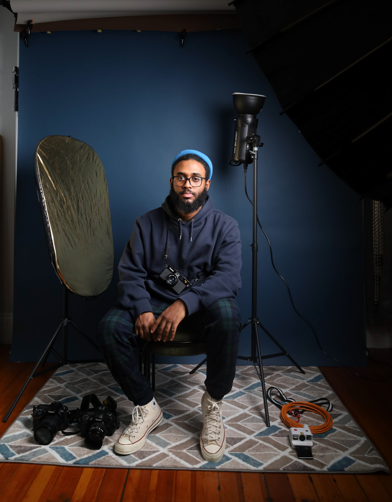

BEHIND THE CAMERA

01
Founder & Creative Director
Oliver
Photographer & Media Arts
Oliver is a photographer and Media Arts graduate based in Boston, MA. He has documented solemn events and
non-profit initiatives, with his work featured across local publications and digital platforms.
As the Founder and Creative Director of Millimeter Visuals, Oliver specializes in portraits, weddings, events,
and visual media tailored for growing brands and individuals.
When he’s not behind the camera or in the editing room, Oliver focuses on expanding his creative repertoire
and mastering new visual technologies.